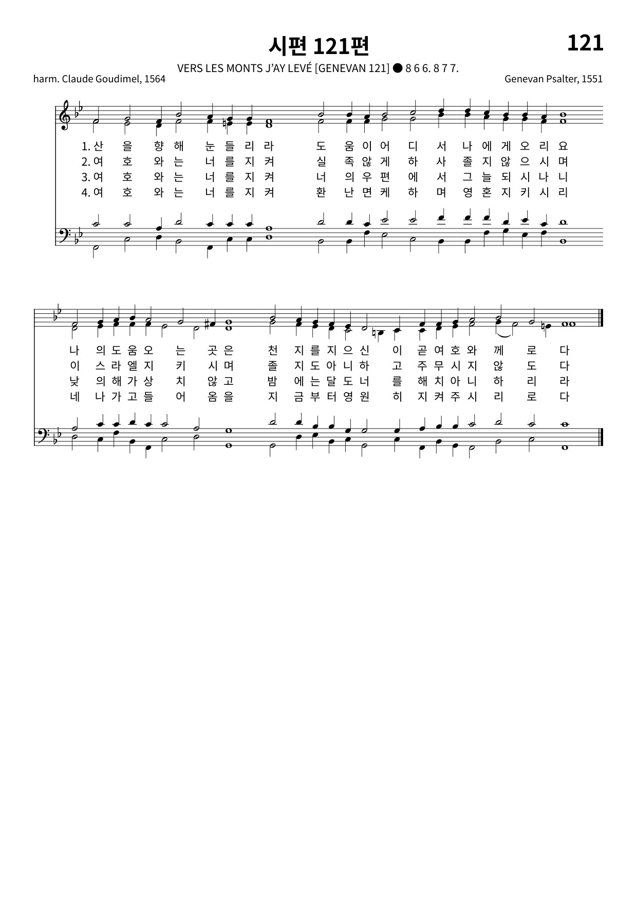

Psalm 121
VERS LES MONTS J’AY LEVÉ [GENEVAN 121] · 8 6 6. 8 7 7.
English title: Unto the Hills I Lift My Eyes
Tune: Genevan Psalter, 1551 · Harmony: Claude Goudimel, 1564 · Lyrics: Korean adaptation of Psalm 121 from the Korean Revised Version (AI draft adaptation · not yet theologically reviewed) · 4 stanzas
Score PDF MusicXML (for printing) MusicXML (for accompaniment, with prelude and repeats) Read Psalm 121 (Korean Revised Version)
Score
← Psalm 120 ListAccompaniment (in preparation)Psalm 122 →
Lyrics (Korean)
Stanza 1 (Ps. 1~2)
산을 향해 눈 들리라
도움이 어디서
나에게 오리요
나의 도움 오는 곳은
천지를 지으신 이
곧 여호와께로다
산을 향해 눈 들리라
도움이 어디서
나에게 오리요
나의 도움 오는 곳은
천지를 지으신 이
곧 여호와께로다
Stanza 2 (Ps. 3~4)
여호와는 너를 지켜
실족 않게 하사
졸지 않으시며
이스라엘 지키시며
졸지도 아니하고
주무시지 않도다
여호와는 너를 지켜
실족 않게 하사
졸지 않으시며
이스라엘 지키시며
졸지도 아니하고
주무시지 않도다
Stanza 3 (Ps. 5~6)
여호와는 너를 지켜
너의 우편에서
그늘 되시나니
낮의 해가 상치 않고
밤에는 달도 너를
해치 아니하리라
여호와는 너를 지켜
너의 우편에서
그늘 되시나니
낮의 해가 상치 않고
밤에는 달도 너를
해치 아니하리라
Stanza 4 (Ps. 7~8)
여호와는 너를 지켜
환난 면케 하며
영혼 지키시리
네 나가고 들어옴을
지금부터 영원히
지켜 주시리로다
여호와는 너를 지켜
환난 면케 하며
영혼 지키시리
네 나가고 들어옴을
지금부터 영원히
지켜 주시리로다